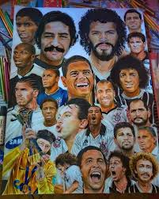

"Em 1º de setembro de 1910 um grupo de operários do bairro do Bom Retiro, localizado em São Paulo, inspirados na passagem de um time Inglês pelo Brasil, denominado Corinthian Football Club, criaram o Sport Club Corinthians Paulista. Mesmo sendo hoje um time multiesportivo, tendo equipes em outras modalidades como a Natação, Basquete, Remo, Futsal, Handebol, Futebol Americano, Futebol de Areia, MMA e Rugby, as maiores conquistas do clube vieram através do futebol. A equipe, que desde a fundação foi formada por pessoas mais carentes da sociedade, aos poucos ficou reconhecida como time do povo. O clube foi um dos pioneiros a aceitar atletas negros em seu elenco. Seu primeiro presidente, o Alfaiate Miguel Battaglia, afirmou desde o início que o Corinthians seria o time do povo. O primeiro campo veio improvisado de um terreno alugado na Rua José Paulino, que posteriormente foi plainado e virou campo. O time, que na época era considerado de várzea, em 1913 ganhou a primeira oportunidade de disputar o Campeonato Paulista, mas não obteve êxito, ficou em quarto lugar entre cinco equipes. No ano seguinte conquistou seu primeiro título, o Campeonato Paulista de 1914, de forma invicta com 10 vitórias em 10 jogos. As décadas de 20 e 40 foram emblemáticas, no período o clube levou nove títulos paulistas, firmando-se como uma das equipes mais importantes de São Paulo e rivalizando assim com Societá Sportiva Palestra Itália, atual Palmeiras. Os anos seguintes foram de altos e baixos até 1961, quando o time entrou em crise e passou 22 anos sem títulos oficiais. O jejum terminou em 13 de outubro de 1977 com o título paulista, quando Basílio, aos 36 minutos do segundo tempo, fez o gol da vitória contra a Ponte Preta, fazendo daquele um dos títulos mais importantes para o time."
O Corinthians, fundado em 1910, não tinha escudo até 1913. Como o time era da várzea, os jogadores não andavam engomados e bem vestidos como os de outros clubes. A camisa corinthiana - que era bege com punhos pretos - não tinha distintivo, até porque, o futebol era um esporte de elite no Brasil, enquanto o Timão era formado por trabalhadores humildes.
Saiba maisO Corinthians apresentou nesta quinta-feira os novos uniformes para 2024, em cerimônia ocorrida no salão nobre do Parque São Jorge. A estreia irá ocorrer no sábado, em partida contra o Fortaleza, às 21h (de Brasília), na Neo Química Arena, pela 5ª rodada do Brasileirão.
Uniforme 1O evento de lançamento foi batizado de “Nossa História é uma página em preto”, com temática antirracista e a presença de membros do Observatório da Discriminação Racial no Futebol.
Uniforme 2Idolos do Corinthians
Os 4 maiores idolos do corinthians